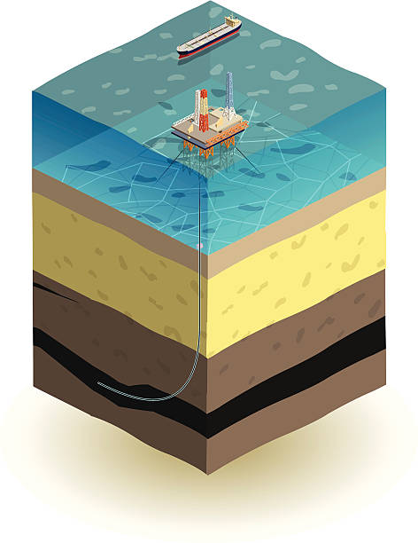

Deep Sea Mining: Advantages
August, 2021Introduction
Deep-seabed mining is the process of retrieving mineral deposits from the seafloor found at depths of 200 meters or greater. In 1960s deep-seabed mining was hypothesised by the publication of John L. Mero's "Mineral Resources of the Sea". Since the ocean floor accounts for approximately 65% of the earth's surface, his book suggested that nearly unlimited reserves of manganese, cobalt, and nickel could be found in the earth's ocean as Manganese nodules deposits on the seabed at a depth of 5000m as lumps of compressed flowers.
Advantages
Technical Advantages
the sustainability effort to phase out fossil fuels and turn towards green technology, like wind turbines and electric vehicles has led to incredible demand for rare earth elements that terrestrial mines fail to satisfy. Thus, the alternative to facilitate such demand could be deep sea mining. The advantage of extraction industries is the advanced technologies built to address environmental problems. In deep-sea mining, this practice can continue because the development is already being carried out to reduce the impacts of problems like plumes.
Ecological Advantages
The deep sea bed mining is also excellent at providing a good supply of rare earth minerals used for the production of renewable energy technologies, such as batteries and wind turbines. As more green and sustainable electricity generation initiatives are started, fossil fuel electricity generation will reduce and the emissions from conventional coal-fired power plants and petroleum cars will decrease. This will lower emissions of greenhouse gases, thus reducing global warming and making the planet more sustainable.
Economic Advantages
With the benefit of deep-sea mining, countries such as the US and Germany will be less dependent on China, which produced 51% of rare earth's elements in 2014, and will be able to establish a more competitive market. Deep-sea mining's possible economic benefits and costs influence the total amount of wealth injected into a country. At the same time, the generation of market values (revenues and financial costs) may be expected to produce economic knock-on effects.
Conclusion
Deep-seabed mining propels technical advancements in the mining industry. Deep-seabed mining may be an alternative to terrestrial mining, which is depleting and becoming more costly. Mining on the ocean floor raises the availability of rare earth elements, lowering the cost of manufacturing renewable technology products. This would increase the use of green energy in everyday life, decreasing reliance on fossil fuels. Furthermore, there would be a decrease in the release of toxic gases into the atmosphere, such as CO2 and CO. Besides, deep seabed mining can provide major economic benefits to the host nation.